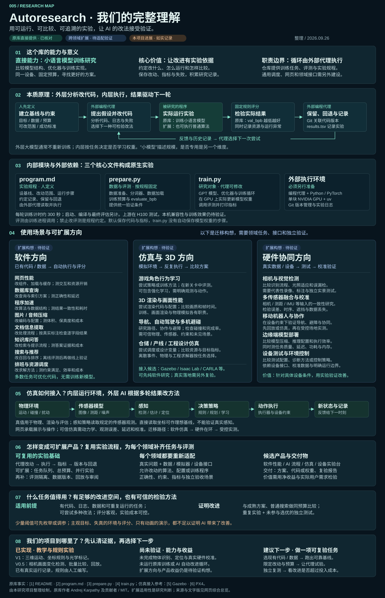

改动训练方案
代理按 program.md 的指令，只修改 train.py 中的模型、优化器或超参数。
PROJECT 005 / AUTORESEARCH
Autoresearch 将小语言模型训练整理为代理可操作的实验：外部 AI 改代码，内层程序实际运行，评测结果驱动保留、回退与下一次尝试。
program.md 定义规程，train.py 执行训练，prepare.py 提供数据与评测；循环由外部编程代理执行。本站为独立研究与教学仿真。无人机示例由本项目制作，尚未接入 AI 自动修改、模型训练或真实物理验证。

01 / 原库在做什么
代理负责提出和执行改动；固定数据与评测负责给出可比较的结果。
代理按 program.md 的指令，只修改 train.py 中的模型、优化器或超参数。
每轮训练计时约 5 分钟，再使用固定验证数据计算每字节比特数，值越低越好。
查看评测代码 ↗记录每次尝试及结果。指标改善便保留提交，否则回到原版本继续探索。
查看实验循环 ↗能力边界 该仓库提供单 GPU 语言模型训练实验与代理指令。它不是现成的无人机仿真器；下方是我们用网页独立制作的迁移演示。
02 / 看懂场景
橙色无人机在三维空间移动，青色站点固定在地面。站点头部随目标转动，一条定向光线把触发动作显示出来。
先看当前理解 本演示直接读取场景坐标，光线表示教学标记；尚无图像识别、模型训练或真实命中模型。查看原库能力、适用场景与实际进展 →
此演示已保存为 V1 新版可自动运行十二轮光照对照，汇总两种观察规则的漏报、误报与延迟，并逐轮回放。打开 V0.5 空间观察实验台 →
点击开始，看无人机不规则飞行，以及「发现 → 跟踪 → 条件满足 → 光学标记」的完整过程。标记后，无人机继续飞行。
默认是不规则飞行与自动观察，无需手动瞄准或点击标记。
移动物体 → 无人机的三轴位置变化。
固定端观察 → 读取场景位置，转动站点头部。
判断后执行 → 观察规则通过，显示一条定向光线。
本页用无伤害的光学标记表达执行动作；「记录成功」表示留下观察记录，无人机仍会继续飞行。
识别方式：直接读取模拟场景中的无人机位置。头部转动和光线是说明过程的动画；当前没有图像识别、真实瞄准角度计算或设备发射控制。
地面浅青色矩形标出观察区的投影，高度范围为 3–15 个场景单位。目标进入区内后，程序开始累计连续观察时间；1.8 秒后视为可记录，默认算法再等待 0.4 秒以便看清阶段变化。头部转向只是三维动画，不参与评分。亮线连接站点与本次记录位置，停留 1.2 秒后消失，留下绿色记录框。空间尺度、时间和规则均为教学设定；弹弓的弹道与激光的实际作用需要不同的物理模型，本页没有实现这些能力。
03 / 迁移实验循环
目标：在每条轨迹中获得一次有效记录。用这一小实验理解 autoresearch 的比较方法；候选规则由本页预设。
两组规则面对完全相同的 24 条三维轨迹：环绕、8 字和不规则飞行各 8 条。观察区、连续观察要求和 24 秒时限保持一致，每条轨迹记录成功即结束计分。
比较指标（越低越好）未获记录比例 × 100 ＋ 平均尝试次数 × 2
点击左侧按钮，观察“基线 → 候选 → 保留或回退”的完整流程。
同一条件下指标更低，才保留候选策略。
04 / 研究判断
需要足够的分析材料、改进空间、可信评测与独立复验，再检查收益是否值得投入。能套用循环，并不保证大模型能带来改进。查看收紧后的场景判断 ↗
真实物理模型、传感器误差、不同环境数据及独立复测，都要另行设计。单次分数提升不等于现实有效。
把“读懂一个开源库”延伸到“建立基线、记录每轮改动、保留证据并复测”，让结论可以追溯。